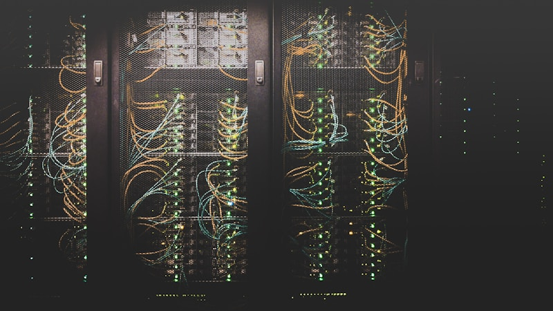

석화업계, 반도체 소재로 전략 대전환 가속

국내 석유화학업계가 '버티기'에서 '바꾸기'로 전략 기조를 전환하며 반도체·인공지능(AI) 핵심 소재 시장 공략에 본격적으로 나서고 있다. 글로벌 공급 과잉과 중국발 저가 공세로 범용 석화 제품의 수익성이 급격히 악화되는 가운데, 고부가가치 소재 사업으로의 대대적인 포트폴리오 재편이 업계 전반의 화두로 떠오르고 있다.
OCI는 최근 지주사인 OCI홀딩스로부터 반도체 특수가스 전문 자회사 OCI스페셜티의 지분 100%를 인수한다고 발표했다. 이번 거래를 통해 OCI는 반도체 제조 공정에 필수적인 특수가스 및 고순도 소재 사업을 직접 운영하게 되며, 이를 발판으로 반도체 소재 신사업에 속도를 높이겠다는 방침을 공식화했다.
OCI스페셜티는 반도체 식각(에칭) 공정 및 세정 공정에 활용되는 고순도 특수가스를 생산하는 기업으로, 국내외 주요 반도체 제조사들을 고객으로 확보하고 있다. 특수가스는 반도체 회로를 미세하게 새기거나 불순물을 제거하는 데 필수적으로 사용되는 소재로, 고도의 순도 관리 기술이 요구되는 고부가 품목이다.
석화업계의 반도체 소재 전환은 OCI에만 국한되지 않는다. 롯데케미칼, 금호석유화학, 효성화학 등 주요 석화 기업들도 기능성 필름, 반도체용 포토레지스트(감광재), 첨단 봉지재 등 다양한 반도체·디스플레이 소재 분야로 사업 영역을 확장하는 로드맵을 수립하고 투자를 집행 중이다.
이 같은 변화의 배경에는 석유화학 업황의 극심한 부진이 자리하고 있다. 에틸렌 등 기초유분 스프레드(원료-제품 간 가격 차이)는 2023~2024년을 거치며 역대 최저 수준으로 추락했으며, 국내 주요 석화사들은 수천억 원에서 조 단위에 이르는 영업손실을 기록하며 구조조정 압박에 직면해 있는 상황이다.
반면 반도체 소재 시장은 AI 반도체 수요 폭발, 고대역폭 메모리(HBM) 생산 확대, 첨단 파운드리 투자 확대 등에 힘입어 연평균 10% 내외의 성장세를 지속하고 있다. 시장조사기관 IC인사이츠에 따르면, 글로벌 반도체 소재 시장 규모는 2025년 기준 약 800억 달러(약 110조 원)를 상회할 것으로 전망된다.
일본 아지노모토의 사례는 반도체 소재 분야의 독점적 지위가 얼마나 강력한 가격 결정력을 부여하는지를 잘 보여준다. 아지노모토는 AI 반도체 기판에 필수적으로 사용되는 절연 소재 'ABF(아지노모토 빌드업 필름)'를 사실상 전 세계에서 독점 공급하고 있으며, 최근 행동주의 헤지펀드로부터 제품 가격을 30% 이상 인상할 것을 요구받고 있다고 알려졌다.
국내 석화업계 관계자는 "기존 범용 화학 제품만으로는 중국 경쟁사를 이길 수 없는 구조가 됐다"며 "반도체·배터리·디스플레이 등 첨단 산업에 공급되는 고기능성 소재는 단순 가격 경쟁에서 벗어나 기술력과 품질로 승부할 수 있는 영역"이라고 설명했다. 소재 전환이 선택이 아닌 생존 전략이라는 인식이 업계에 확산되고 있다.
전문가들은 석화업계의 반도체 소재 전환이 단순한 업종 다각화를 넘어 국내 반도체 공급망 강화에도 기여할 수 있다고 평가한다. 현재 국내 반도체 제조사들이 사용하는 핵심 소재의 상당 부분은 일본·미국 등 해외 기업에 의존하고 있어, 국산 소재 기업의 성장이 공급망 리스크 저감 차원에서도 중요하다는 것이다.
정부도 반도체 소재·부품·장비(소부장) 국산화 정책을 지속적으로 강화하고 있다. 산업통상자원부는 2025년 기준 소부장 분야 연구개발(R&D) 예산을 전년 대비 15% 이상 확대했으며, 국내 소재 기업들이 반도체 제조사와의 공동 개발 및 인증 절차를 신속히 밟을 수 있도록 지원 체계를 정비하고 있다.
다만 반도체 소재 시장 진입에는 높은 기술 장벽과 긴 고객 인증 기간이라는 현실적 난관이 존재한다. 삼성전자·SK하이닉스 등 대형 반도체 제조사의 공정 적용 승인을 받기까지 통상 3~5년 이상의 기간과 막대한 R&D 투자가 필요하며, 이 과정에서 중소 석화기업들이 재정 부담을 감당하지 못해 전환에 실패하는 사례도 발생하고 있다.
증권업계는 반도체 소재 전환에 성공한 기업들을 중장기 투자 유망주로 꼽고 있다. 한 증권사 애널리스트는 "석화업계의 소재 전환은 단기 실적보다 3~5년 후의 기업 가치를 결정할 핵심 변수"라며 "기술 내재화 속도와 고객사 인증 진행 현황을 꼼꼼히 모니터링할 필요가 있다"고 조언했다.
반도체·AI 산업의 성장이 구조적으로 지속되는 한, 석화업계의 고부가 소재로의 전환은 되돌리기 어려운 대세적 흐름으로 자리잡을 전망이다. 업계는 이미 시작된 변화의 속도와 깊이가 향후 기업들의 생존과 도약을 결정짓는 분기점이 될 것이라는 점에서, 과감한 R&D 투자와 핵심 인재 확보가 무엇보다 중요하다고 입을 모으고 있다.